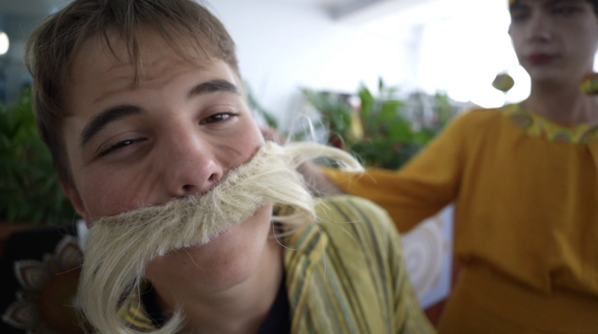
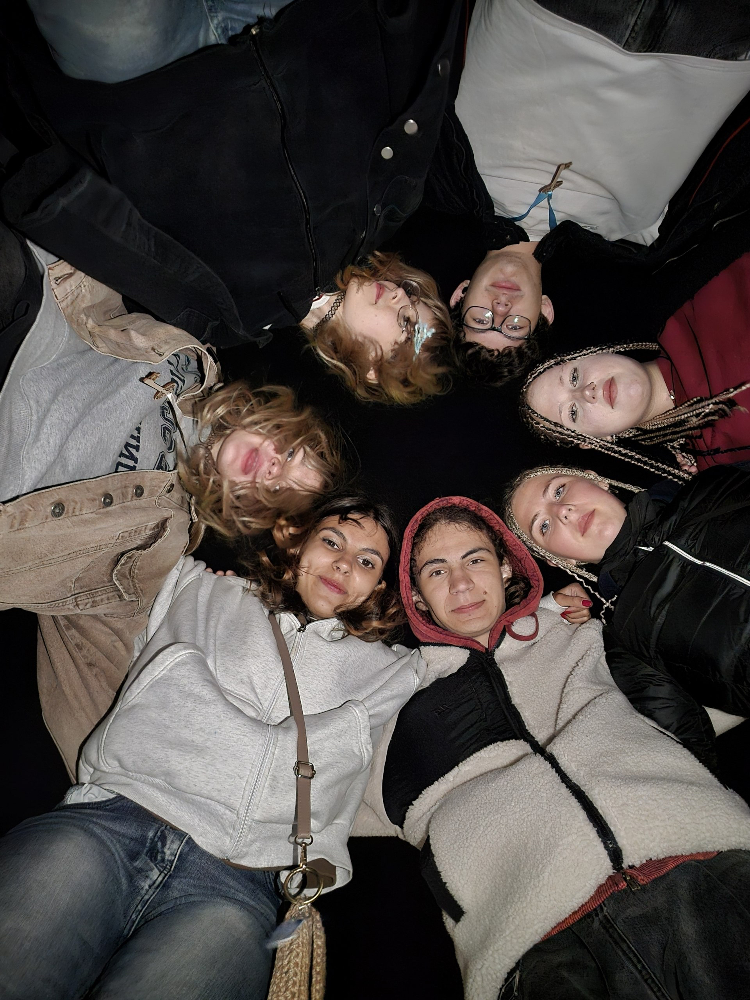
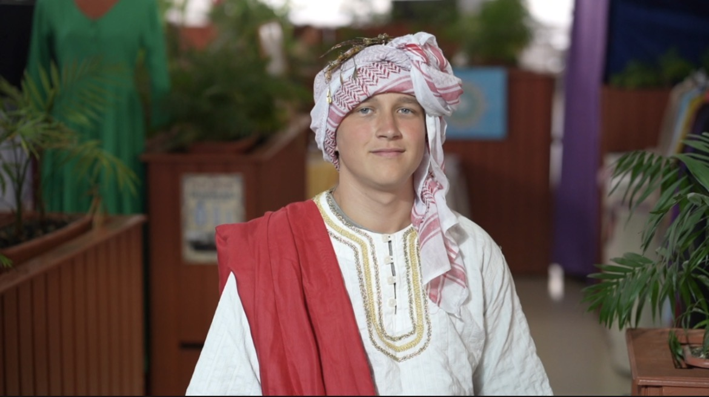
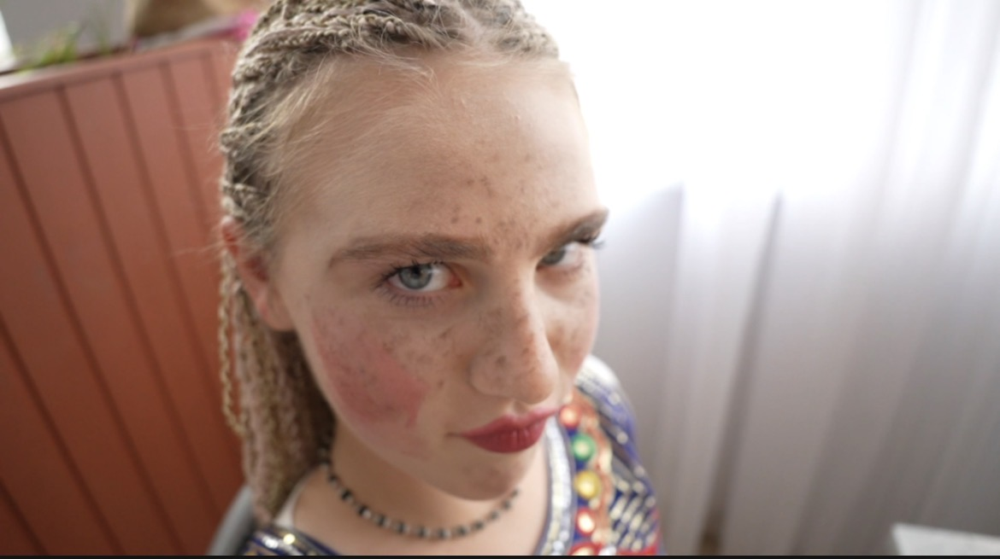

О нас

Проект "НеСпавшие Сутки" родился на 29-м фестивале "Благость", во время производства фильма "Сурьяпёк". Наша команда не спала больше суток, сидя за монтажем и съемками, что послужило причиной тотальной деградации сознания. Так и появился этот проект. Мы занимаемся кинопроизводством, дубляжем фильмов и сериалов, а так же производством и дубляжем аниме.
Смотрите в нашей озвучке

Название проекта
